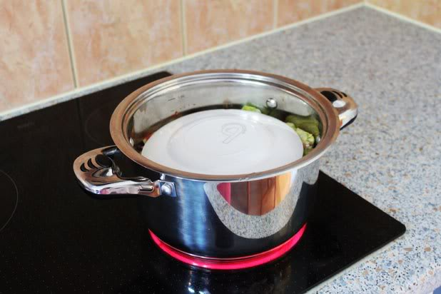
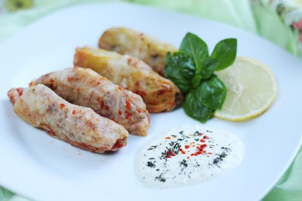

Recept Sarma
Bereidingstijd: 120 minuten
Recept is voor 4 personen
Het recept is origineel van Turkse afkomst, maar het is ook een heel bekend gerecht in Joegoslavië, het wordt daar veelgemaakt en gegeten. Het is vlees met rijst en groente opgerold in druivenbladeren. Hier heb je een foto van gerecht.

Dit zijn de Ingrediënten:
- spitskool
- 500 gram rundergehakt
- salami
- rijst
- bouilonpoeder
- paprikapoeder
- zwarte peper
- knoflook
Bereidingswijze:
Eerst het gehakt met de gesnipperde ui, knoflook,blokjes wortel en kruiden en salami bakken in olie,daarna +- 2 kopjes gekookte rijst toevoegen dit laten afkoelen dat de kruiden kunnen intrekken in de rijst en gehakt.
Bij de koolbladeren de dikke nerven gladder maken een hoopje rijstmengsel op het koolblad leggen en oprollen tot pakketjes. (Pasop dat het rijst er niet uitvalt) je kunt het beste de uiteides van de koolbladeren indrukken.
Uien bakken in olie met een restje kool. Daarna water net bouillonblokje of poeder toevoegen de koolrolletjes in het bouillon leggen en met deksel op de pan langzaam laten koken na ongeveer 1 uur als de kool is gaar een beetje olie met bloem vermengen en bakken daarna paprikapoeder toevoegen en in het bouillonmengsel doen even laten koken en je hebt een heerlijke gerecht.
Dit is het eindresultaat (prijatno=eet smakelijk). Om het recept zelf te zien Klik dan de link om naar de website te gaan hier